Turn Order: Making Paper Minis for TTRPGs with a Silhouette Portrait Digital Cutting Machine
What Is a Silhouette Portrait 4?
The Silhouette Portrait 4 is a computer controlled cutting machine designed to work with paper, card, vinyl stickers, and dozens of other materials. It’s the smaller cousin of wood working routing machines and metal laser cutters that looks a bit like a home printer.
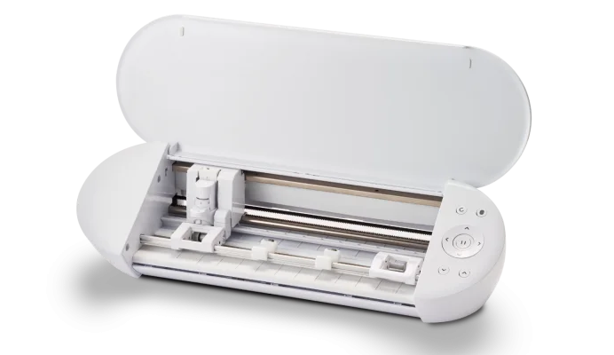
Credit www.silhouetteamerica.comThey have a variety of uses, from cutting out custom stickers or stencils, scoring card for creating 3D model nets, or for the use I’m discussing today, cutting out paper miniatures.
 Paper minis designed by PrintableHeroes.com and PaperForgeMinis.com, printed by Vre'Kais
Paper minis designed by PrintableHeroes.com and PaperForgeMinis.com, printed by Vre'Kais
Other Brands of Cutter
Silhouette is just one brand of digital cutting machine available, Cricut is another popular brand but it has its own software and processes. This guide will focus on using a Silhouette Portrait 4 but much of the process will be similar for other brands, and should be identical for any other Silhouette model. If you want to follow along with this guide, download and install the Silhouette Studio software and follow any required registration steps.
Where to Get Paper Mini Art
For this guide I’m using art created by Printable Heroes, sort of, the miniature I'm making today was actually created by a community member from the Printable Heroes Discord server using parts of several other Printable Heroes miniatures to create something new. It’s a great community that I can’t recommend enough.
What I'm looking to print and assemble today is called a Strix, a menacing construct featured in Curse of Strahd: Reloaded which is the campaign I’m currently DMing.
Adapting Other Art
Whilst this guide uses purposefully designed paper miniature art you can make paper miniatures from any monster art you have available. I’ve made miniatures using Hero Forge for instance using images of the 3D mini from the front.
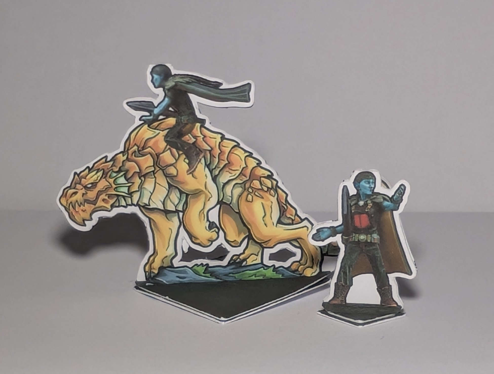
Combination of Hero Forge mini and PrintableHeroes.com art, photo by Vrekais.There are some compromises when using art this way; if it’s art from a book or adventure it’s very rare that you’ll get a front and back profile of the monster, so your mini will probably need to have the same front and back art work (but mirrored for the other side). If you’re using a Hero Forge image it’s technically possible to get a front and back image, but it’s not trivial to make these images actually work. Perspective is crucial here; if the 3D mini’s pose or equipment extend to far forward or back from the centre vertical plane of the mini then those features will vary in size between the front and back images. This can make lining up the two images very difficult, and cause them to not precisely match up. It’s generally easier to stick with the same art for front and back but don’t let me tell you what to do!
How to Print, Cut, and Assemble Your Paper Minis
So we have our cutter, our art, and our software, let's get started actually creating the mini!
Preparing the Page
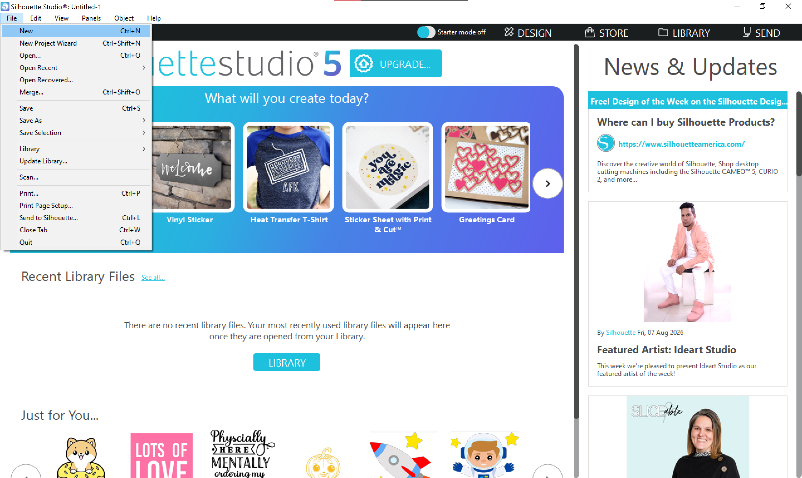
Start by creating a new project from the File Menu. This will take you to the default blank project. Here we have a few options and steps to consider.
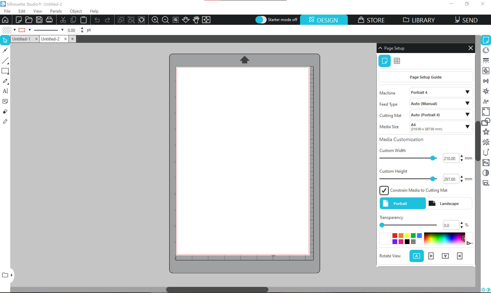
By default the software has loaded an A4 sheet as my page; while the cutter will handle A4 reasonably well, in my experience with the machine it needs proper support otherwise the flex in the cutting mat caused by its own weight can cause an uneven cut at the designs extremities. For this reason I actually tend to print and cut my minis from a smaller A5 sheet. Let's set that up now in the panel below.
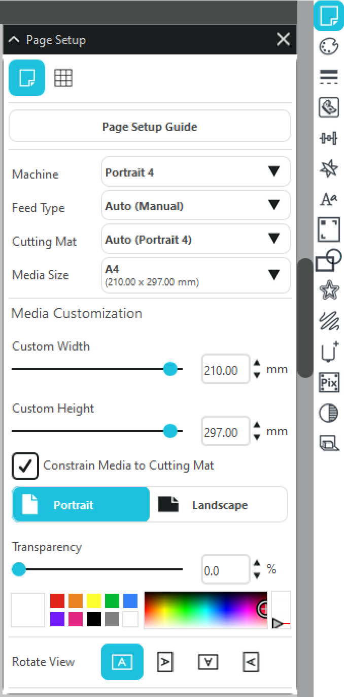
If these settings are not currently visible, they can be accessed by clicking on the Page Setup Panel button located at the top of the toolbar on the right hand side.
After setting our page size A5 we now need to tell Studio to print “registration marks”, these show us where the cutter can cut and allow the cutter to align itself with our printed design. Open the registration marks panel to configure them.
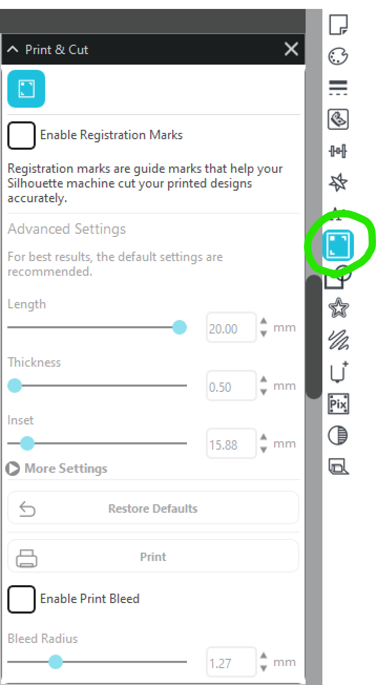
Tick “Enable Registration Marks” and configure the inset value you wish to use, this will change the usable space on the sheet. Because I’m using A5 media that is well within the range and accuracy limits of the cutter it’s pretty safe to reduce the inset of the registration marks to their minimum settings here. I would probably recommend 15mm or even 20mm if using A4 or similar sized media though. Your project should now look like this.
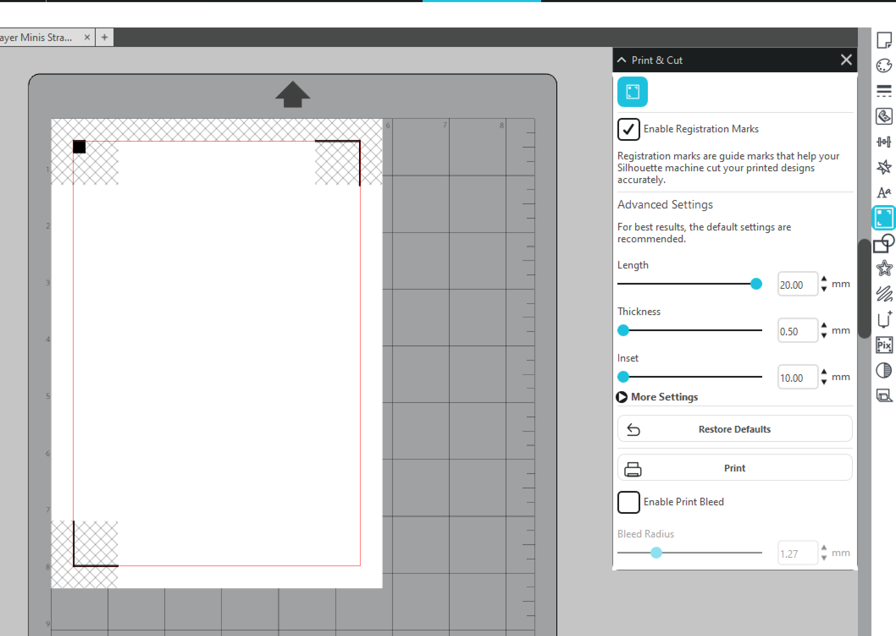
Now we’re ready to add some art. This guide will go step by step through doing this manually, some paper mini art providers do actually have Studio Cut files available that can skip some of this work. I don’t use them for two main reasons:
- I print my minis at 15mm scale; I do this so that I can fit greater distances on maps on my VTT screen.
- I print my minis with an attached square base. Printing minis without a base is fairly common at full scale as it saves storage space and slot bases for full scale minis are widely available. If you’re using this guide but don’t want to print with a base, you can skip those steps in my process.
Preparing the Art
Drag your .png into the Studio software. It should look something like this.
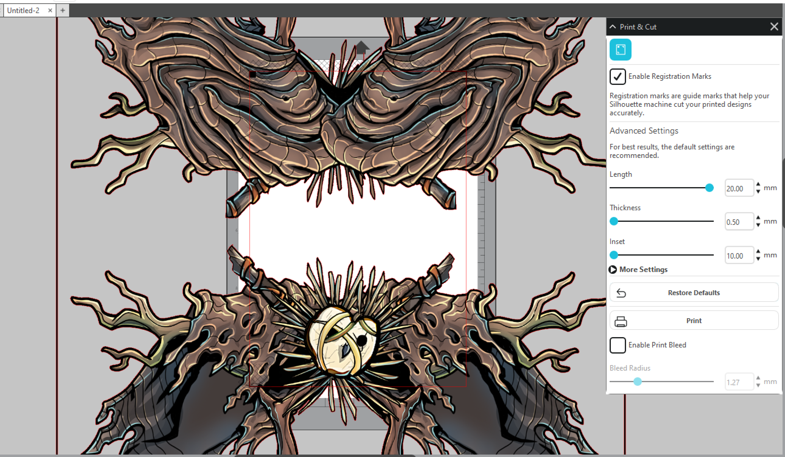
Yes, that is too big. Zoom out using the buttons at the top of the design or by holding ALT and scrolling back (towards you). I would then usually drag the mini art to the side of the project like this.
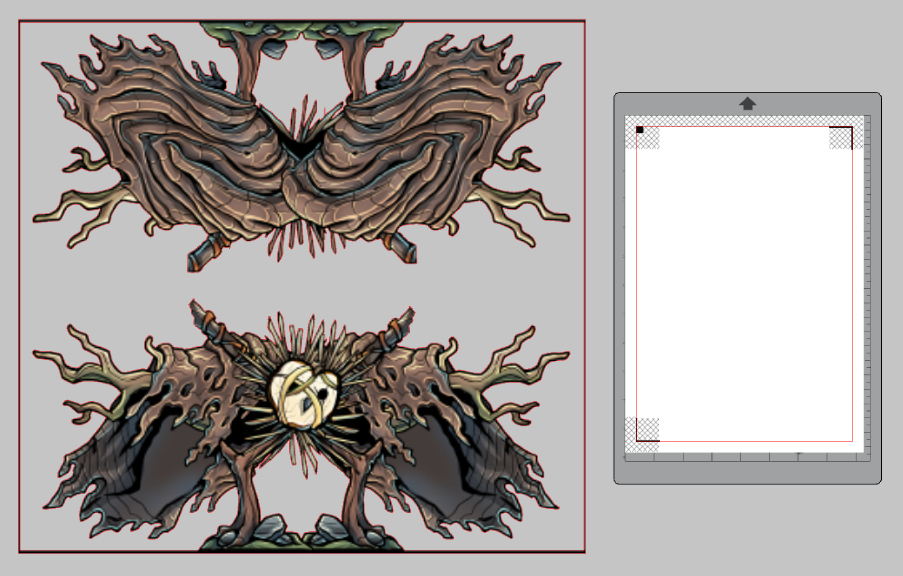
You might notice at this point the whole piece has a red line around every edge; this is normal. We will address this later on in the guide.
Clean Up and Positioning
Most paper mini art will include a square box and base drawn around the mini in the .png you download; this will need to be removed. The Strix art I’m using doesn’t have this box because it’s a “kit bash,” but I’ve included a box around it just to demonstrate how to remove it. Locate the eraser tool on the left tool bar.
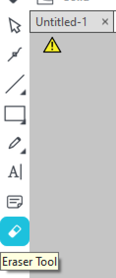
Erase the box at the points it touches the mini art you want to keep.
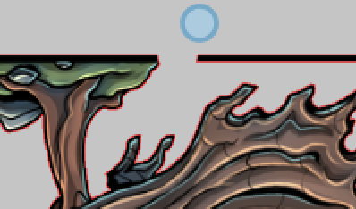
So that your project looks something like this.
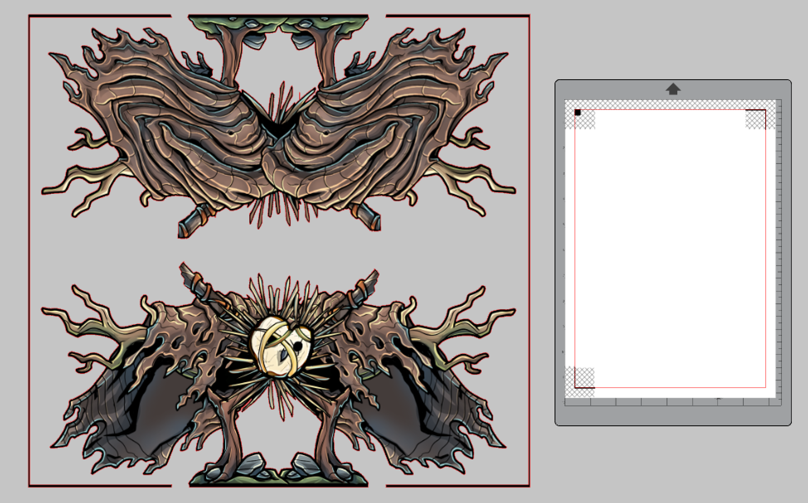
The studio software actually divides imported art up into contiguous parts, so at this point we actually now have four separate parts, the front and back of the mini, and the two box remnants on either side. We can now select and delete them but using the Select tool in the left toolbar. It should now look like this.
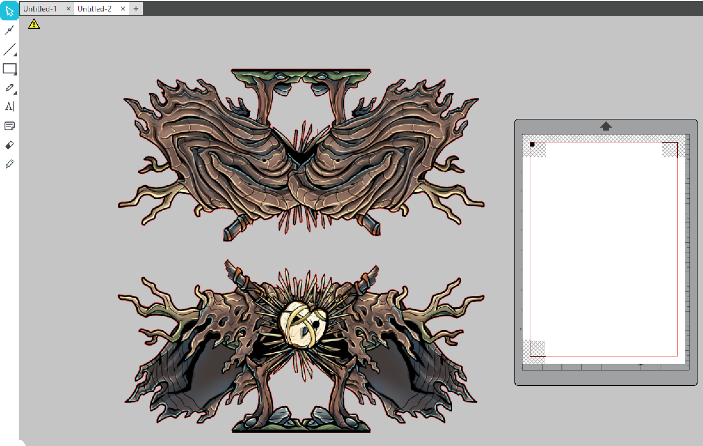
Before we move onto scale there’s the matter of the red line. By default when you import images into Studio, it detects the outline of the image and adds a 0mm offset cut to the art work. That is what the red line is showing. We do not want it to cut this close, so we need to change this line from red to transparent. The studio software uses coloured lines of 0pt thickness to determine the type and path of cuts to be made, because these lines are actually 0pt thick they will not be printed on the design; they only appear in the editor.
To change the line to transparent select all parts of the art (remember it’s likely to be in two parts now) and click the line colour menu located in the top left to set the line colour to transparent.
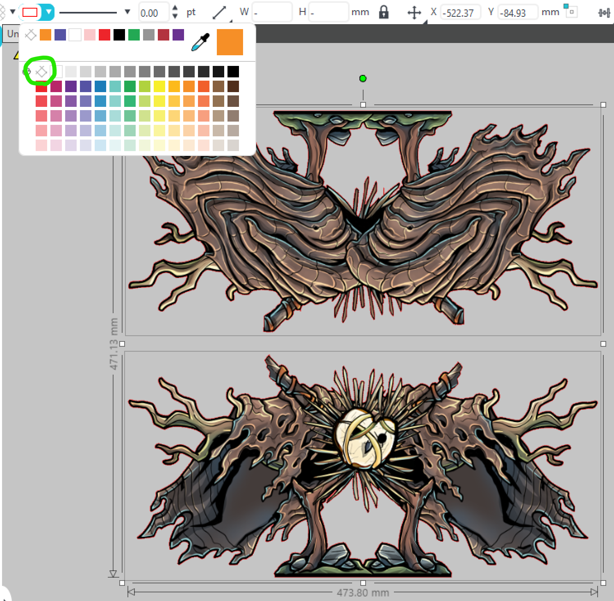
This should remove the red line you could see. Now we can move on to position and scale.
Position and Scale
Scaling Paper Minis is not an exacting science; there will always be compromises. These instructions will detail the process I use to keep my minis consistently scaled with each other, but working out what works for your own tables will take some trial and error.
On my table maps us a 15mm grid (rather than the typical 1” grid), each square representing the usual 5ft. So my minis are scaled with 15mm = 5ft roughly in mind, tending to be closer to that scale exactly the larger the monster in question actually is meant to be. For instance if I’m making a 3ft tall Halfling mini, those tend to be slightly more “heroic” in their scaling because a 9mm tall mini isn’t terribly practical on the table.
With that in mind we need to scale the Strix, it’s a large monster (taking up a 2x2 space on the grid) and I’m picturing something between 12-15 ft tall. So at my 15mm to 5ft scale that’s going to be roughly 36mm tall. Lets start by drawing a box 36mm tall to fit out mini within.
Using the Shape Tool draw a rectangle into our design as shown; its size doesn’t matter right now.
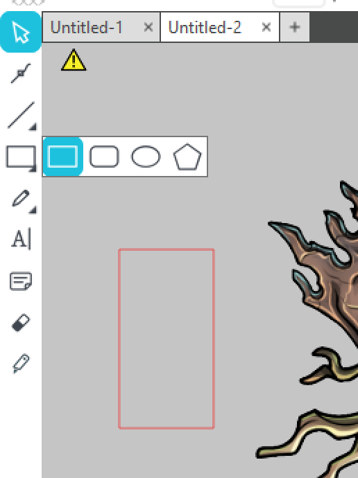
Select this rectangle and change its size using the size controls at the top of the editor. You may need to click the pad-lock icon to the right of these controls to disable ratio locking so that the numbers can be adjusted independently.
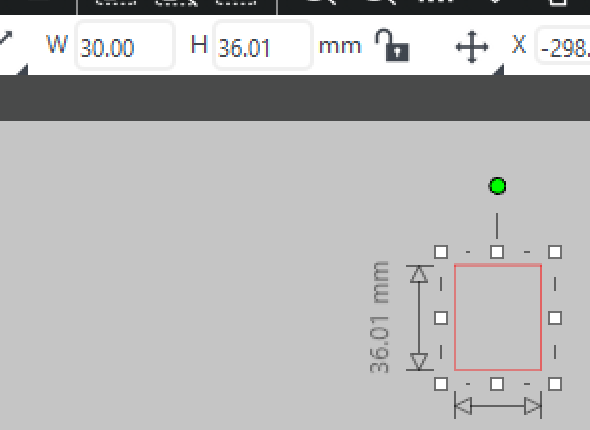
I’ve made my box 30mm wide and 36mm tall. The width is based on it being a 2x2 mini making it 2 grid squares wide. This box is just a guide though. Next we’ll need to reposition our art and scale it down. At this stage I would suggest that if there’s a large gap between the front and back art, make that gap a lot smaller now, a few mm at most. Then reduce the size of both parts together by selecting them and using either to corner anchors or by turning ratio locking back on with the padlock button and typing in a new height into the box (remembering that this number will be more than double the eventual height of the finished mini).
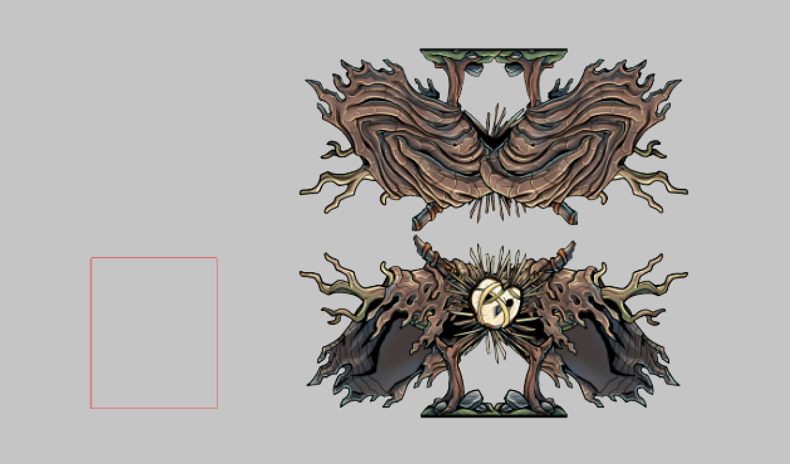
Grouping the separate art parts at this point will help you ensure they stay aligned with each other (available in the right click menu). Then we can drag the art within the guide rectangle so that the front part of the mini fits within it, and adjust the scale until you’re satisfied. This particular mini is going to overhang its base significantly due to its large wingspan so only the feet and body will be within the rectangle.
I’ve added a few already finished minis to my project at this point just to check that the scale fits right with minis I’ve already printed and assembled. I’d highly recommend doing this once you have a few minis made as it really helps keep everything looking right.
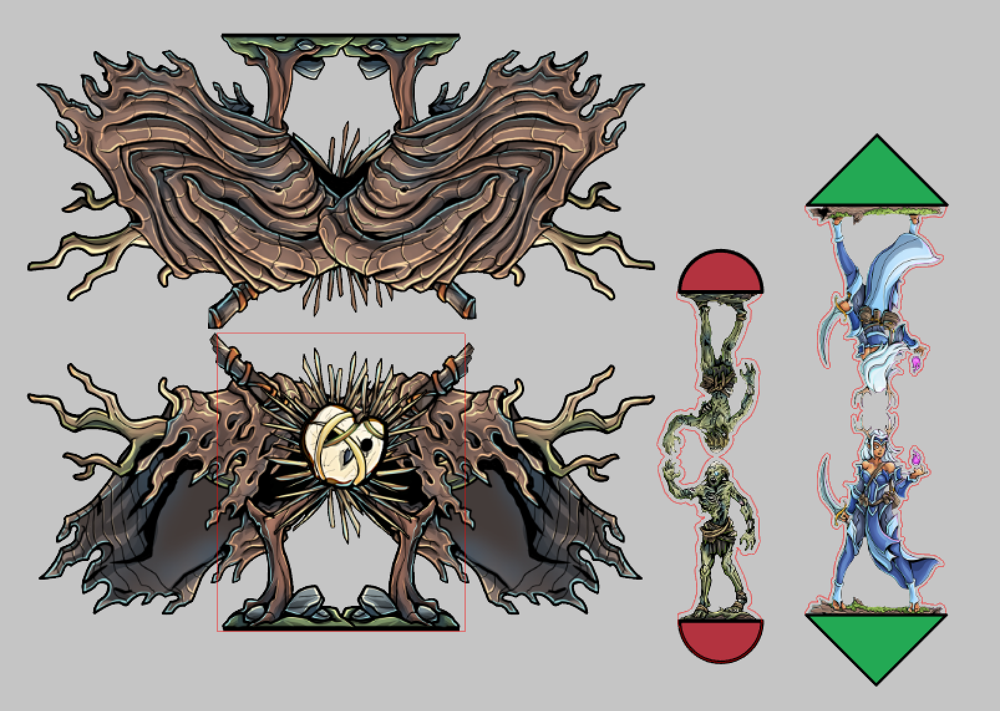
This is looking menacing enough compared to a Zombie and one my group's character minis.
Adding a Base
At this stage I would normally add a base to the mini. If you’re not planning to use attached bases skip this section of the guide.
My bases are square but I actually create them as two separate triangles so that the eventual mini is on the base at a 45 degree angle. I do this so that regardless of which way the mini is placed on the table no player is looking directly at a thin edge face on, they should have a pretty good view of the front or back from any cardinal side of the table. It’s not perfect, but I think it does help slightly.
There is not however a “triangle tool” so to make one has a few steps. Start with a rectangle, sized as required using the same method I showed earlier. For my needs I’m going to make a 29mm by 29mm one. It should look like this (though I’ll eventually change the outline of this to the same red, it’s black for now to help illustrate where cut lines are later in the guide).
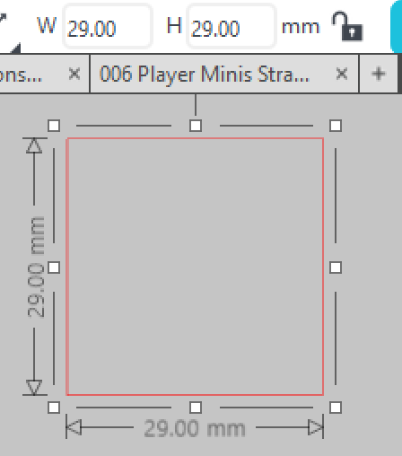
Right now though this won’t print as it’s just a red box with 0pt thickness. We need to change that using the line colour tool, and line thickness tools in the top left.
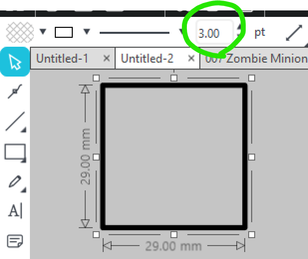
I tend to use solid colours for my bases; using art is possible but slightly more complex if mimicking my triangular base method. The colour fill setting is directly to the left of the line colour option. I’ve gone with a deep red here as I use colour to help distinguish between friend and foe on the map.
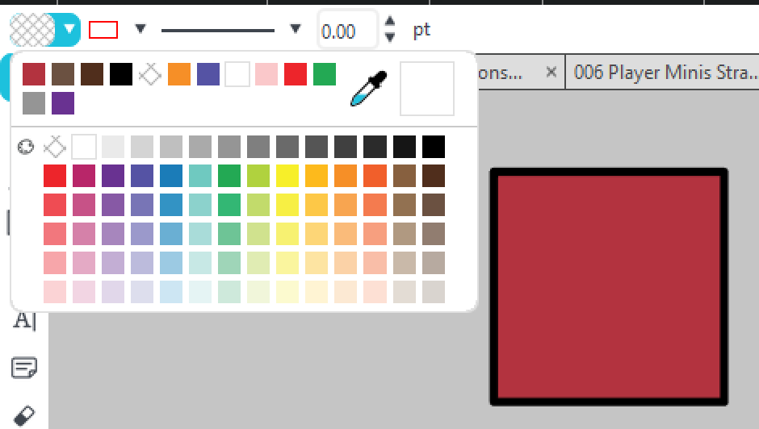
Making it into a triangle is next. To do this we’re simply going to remove one of the vertices. First though, take a copy and paste it into the project (I’ll explain why we want this later). Then right click on one of them and click “edit points”.
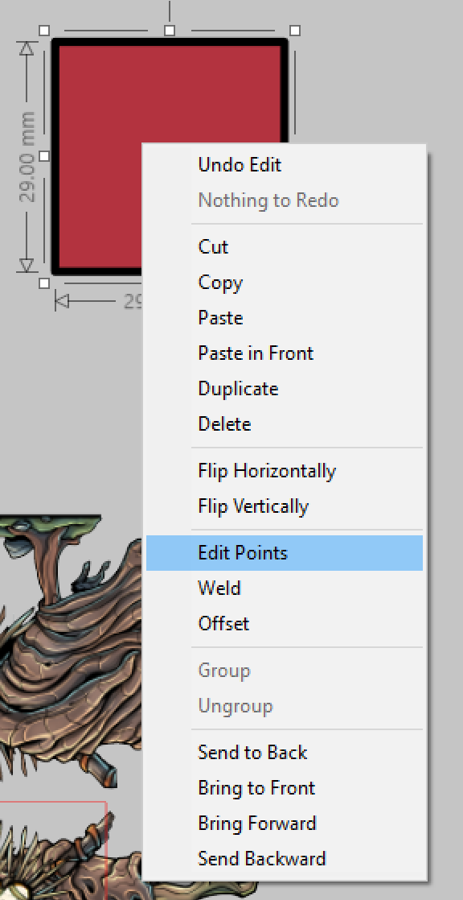
Then simply click on and delete one of the corner points. You should now have this.
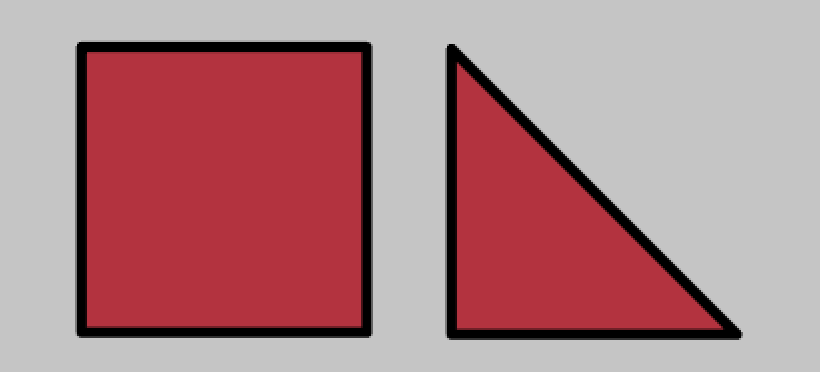
We can now copy and paste this triangle for the front and back half of the base, and arrange them around the mini art on the page. It should look something like this now.
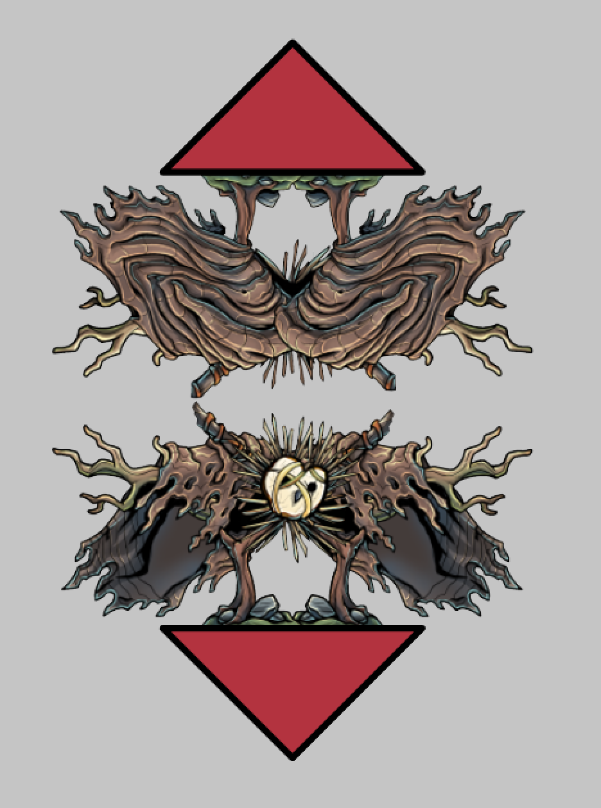
I’ve brought that square we made as well, we will need this to mount the finished mini on when it’s printed.
Next we move on to tell the machine where to cut.
Cut Lines
The mini’s cut lines will usually be a few mm away from the mini itself, this avoids trying to make the machine do really really tiny cuts for details really close together. Lets select our mini art (not the base) and add a offset cut. To do this select to Offset Cut Panel from the right hand tool bar, click the “offset option” in the top left of the panel and set a distance for the cut. I’ve gone with 0.7mm. Then click Apply.
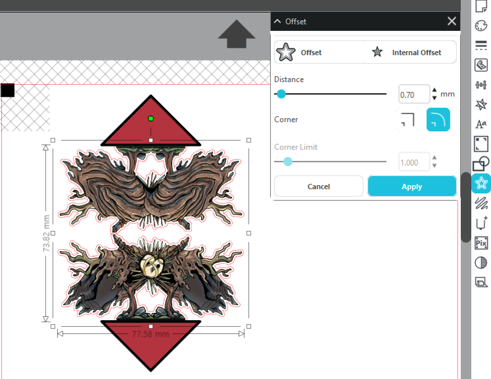
As I had both pieces of art selected, these cut lines have actually “welded” where they overlapped here. This is expected and will be the basis of where we fold the mini once printed. You can have them cut entirely separate to be lined up later but I find the folding method a bit quicker.
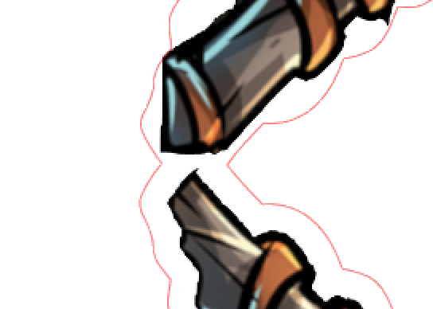
Note. This mini art is a kitbash, so the alignment of front and back won’t be as perfect as it would be for other minis from the printable heroes catalogue. This is expected. For the best results with modified minis, it’s sometimes best to just have the cut line trace the front art of the mini, and then copy and mirror that cut line for the back art. I’ve done that for this mini but it’s not a step usually required for most minis.
At this point there may be some cut lines contained within the mini; depending on the scale of the mini some of these might work if left in, some might cause the mini to be quite flimsy and fragile. In the case of the Strix here it would put a lot of strain on two very thin legs so I am going to remove the internal cuts. To do this we need to disconnect the cuts from each other as they are all linked by default. Select the cut line by clicking one and then right click. Select “release compound paths” and this will break up the cuts into each separate part.
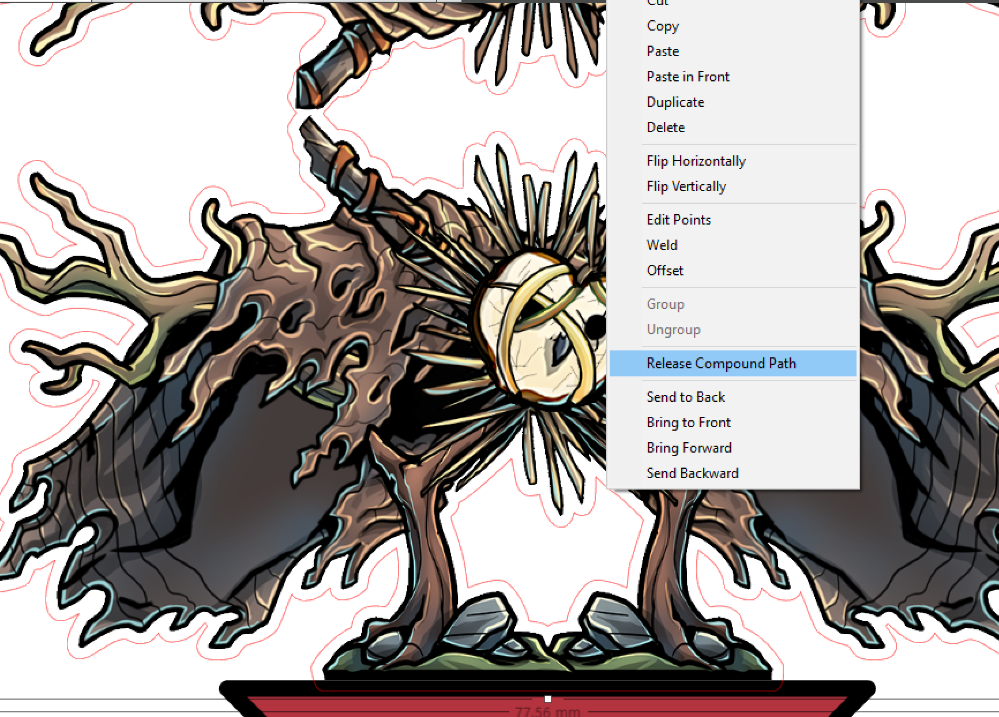
You can then select all the internal cuts, and delete them.
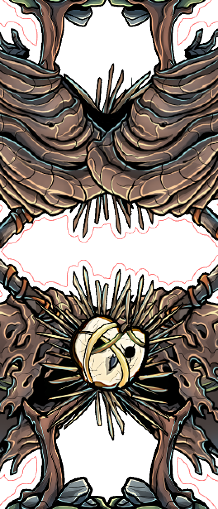
Now we need to add cut lines for the base. It’s essentially the same process but I want it offset 0.2mm to cut close to the outline of the base. Once done the project should look like this (you might need to right click and “send to back” to see this).
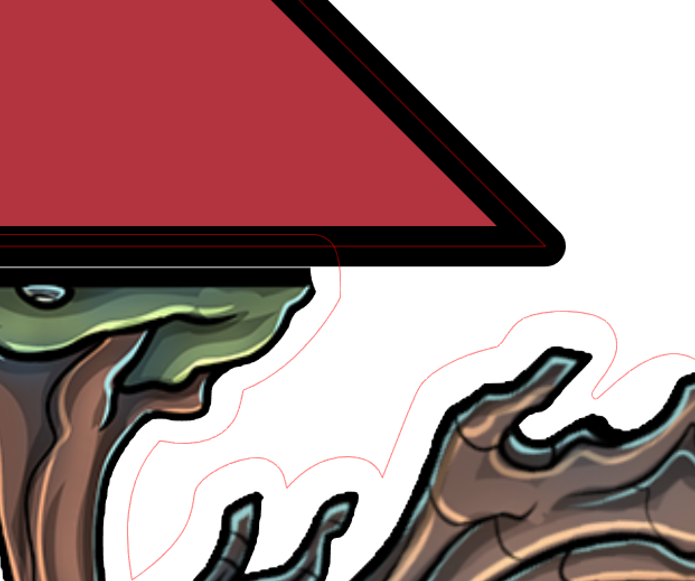
Here’s the most fiddly part of my process, though. We now need to “weld” the cut lines of the base and the mini together otherwise we’ll just end up cutting the base off the mini. I’ve tended to find the easiest way to do this is actually to select everything and then use CTRL click to deselect the mini art and the base, so you should end up with JUST the cut lines selected. With only the cut lines selected, press CTRL + SHIFT + W to “weld” them; this is also available in the Object > Modify menu at the top of the screen, and technically in the right click menu but in my experience trying to right click when doing this causes you to accidentally select something else. If welded correctly the cut lines will look like this between the base and mini art.
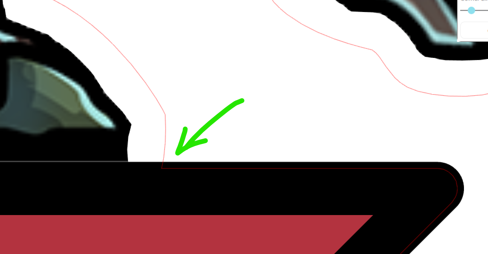
Lastly, I’ll add a cut line to the square base offset at 0mm; this will make it slightly smaller than the base of the mini itself so that it doesn’t poke out from under it.
Scoring and Perforating Folds
This is largely optional but at this stage you could add more lines to tell the machine to score or perforate some fold lines for you, to avoid doing them manually. Which one you use will depend on which way the line is folding as the machine can’t score both sides of the sheet, only the top.
The middle fold between front and back faces can be scored using a scoring line. I’ll explain the settings for this when we get to cutting the minis out but for now draw a line through the centre and give it a distinct colour. This line will by default be 0pt wide and registered by the software as a cut line, but by giving it a different colour we can tell the machine to do something other than cut along this specific line. It should look like this.
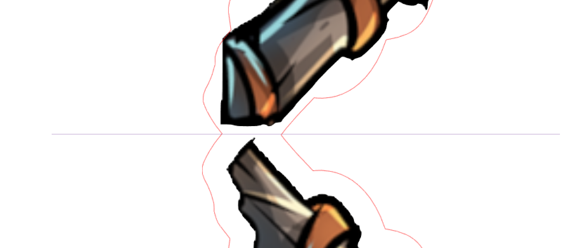
The folds for the base however would ideally be scored on the other side of the sheet as they are going to fold the opposite way, we can’t do that. What we can do however is perforate the sheet slightly to make this folder easier. If I’m honest, this works, but it’s not as good as scoring the eventual print out by hand. For a single large mini like this I would probably do it manually, but if you’re printing dozens of zombies, it’s a massive time saver. If you are doing it, it’s the same as adding a scoring line but we’ll change it from a solid line to a dotted one, and give it a different colour. The options for this are all located in the top menu to the right of the line colour, and thickness.
It should look like this (replicated for top and bottom).
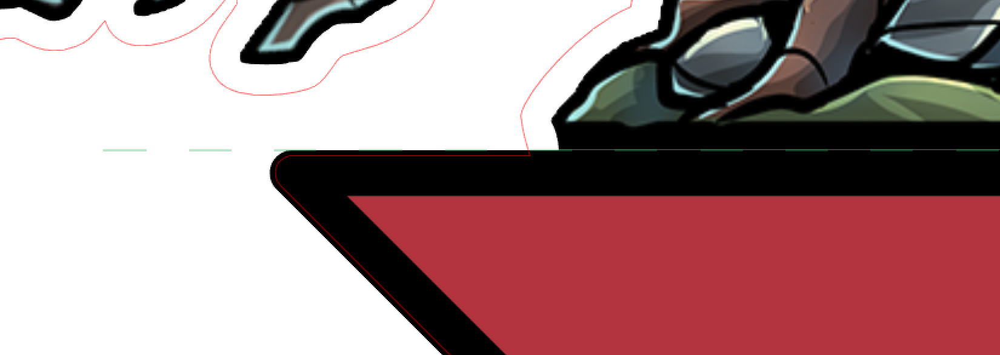
At this point I’ll change the base outline to match the base colour, it just ends up looking neater if you do this. I’d recommend at this stage clicking on the SEND mode (button top right of the screen) to check that all the lines you expect to cut are the only ones present. It should look something like this.
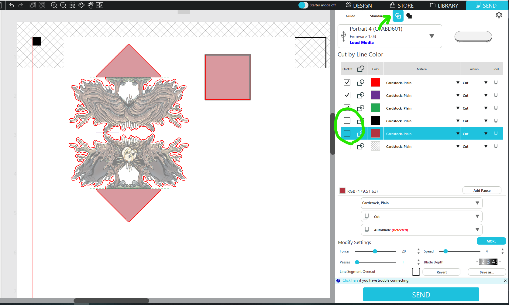
Now we have this all set up, it's time to print. If I wanted to have several of this mini at this point I could copy and paste all of this work several times on the sheet, this way you can make large hordes of minis like these Zombies very quickly.
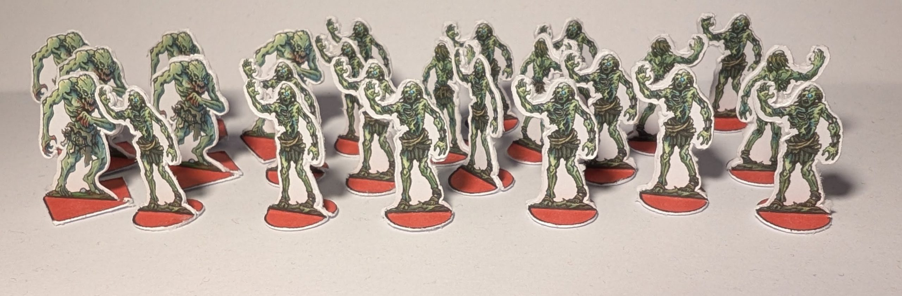
Designed bu PrintableHeroes.com printed by VreKaisPrinting Your Minis
Printing your minis has a few steps to consider here based on your media of choice. I print on 220gsm A5 card stock; the US system of paper weights and types is a bit more arcane though. This should be roughly equivalent to 80lb card stock, but I also know plenty of people who use 68lb matte photo paper.
If you’re using media similar to mine, especially any without a photo print coating, adjusting the brightness and saturation of your print can drastically change its quality. Heavier papers tend to absorb more ink causing the image to appear darker than intended, causing any darker details to be very hard to see. I’d suggest digging through your printer settings for the custom brightness and saturation settings, I tend to increase brightness by 10% and Saturation by 5% (at least I think these settings are in %).
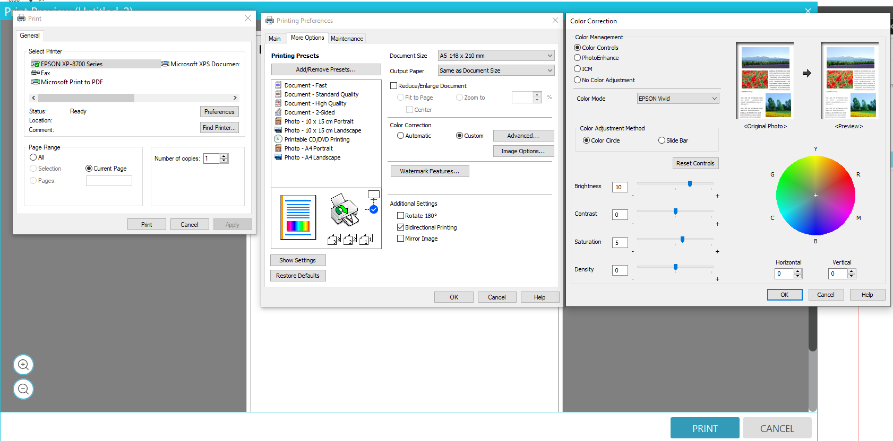
And obviously if your printer has a print quality setting, set this to as high as it goes. This will adjust your printer’s resolution to highest, literally moving the paper slower to print thinner lines on each pass.
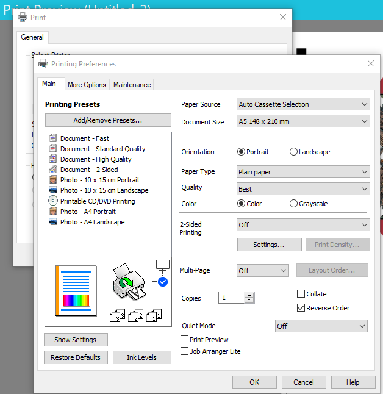
Now that we have our printed design, it's time to cut.
Cutting Your Mini Out
After all of that, we are finally at the cutting step. Remove the protective cover of your cutting sheet, and press your printed media onto the adhesive side as shown in the software (if you put it in the wrong place it will not find the registration marks).
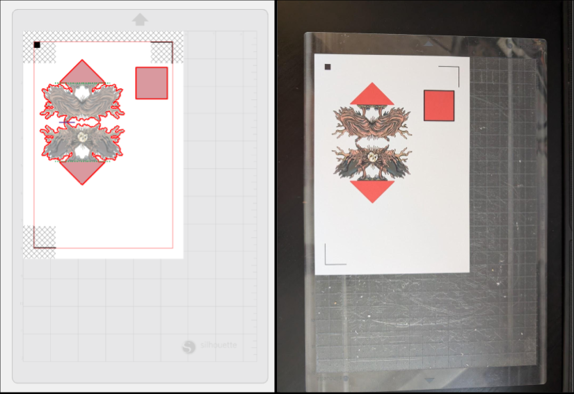
Make sure you firmly press your design down onto the cutting sheets sticky, if it comes loose during printing the blade will just drag the sheet around rather than cut it. Line up the cutting sheet into your machine and hit the load arrow button on the machine, it should look like this when inserted.
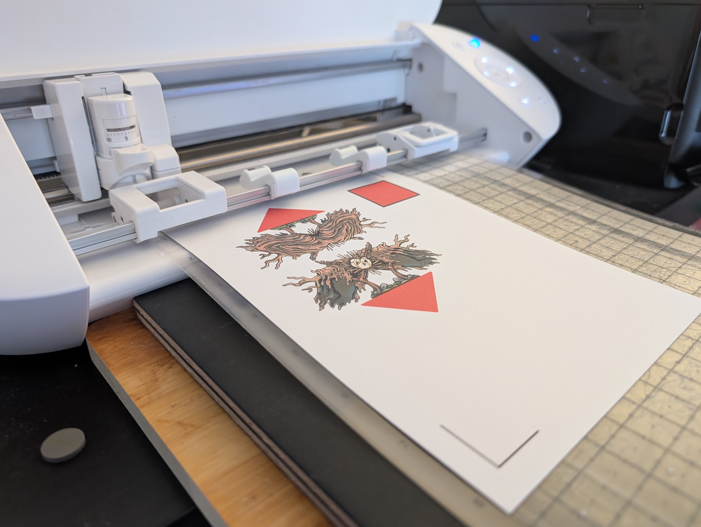
BEFORE we get too excited though, we need to make sure all the cut settings are set correctly. This design has three different types of cut we want to do. These settings are found in the SEND mode we used earlier.
Red: A cut through the material to release the mini from the card. This will be the deepest cut we do. For the card I’m using I tend to set the blade depth to 5 and do two passes. The settings for the red lines should look like this. Purple: This is a score line between the front and back artwork for folding the mini. I’ve found the “score” preset works just fine for this. The presets are nothing special, they just change the depth and force settings to specific values. It should look like this. Green: This is the perforating line to help us fold the base, whilst it sounds fancy it’s actually just a cut line but because it’s dashed it will only cut on the dashed parts of the line, lifting the blade to move over the gaps. We don’t want to go all the way through for this one though so I’d reduce the depth to 2, and only do a single pass.With all those settings checked, it’s time to press send and cut out our print. One tip I’ve found useful here is to make sure you have something supporting the print sheet on either side as when it sags it can leverage the print off the print sheet, keeping it as flat as possible mitigates this. With that all set up, hit send, and watch it go. It will scream like it’s possessed by a goblin. This is normal.
Removing Your Cut Minis from the Cutting Sheet
When finished eject your cutting sheet from the machine. I’ve found that the best way to remove the print from the sheet is actually to flip it over a peel it away slowly from above like this.
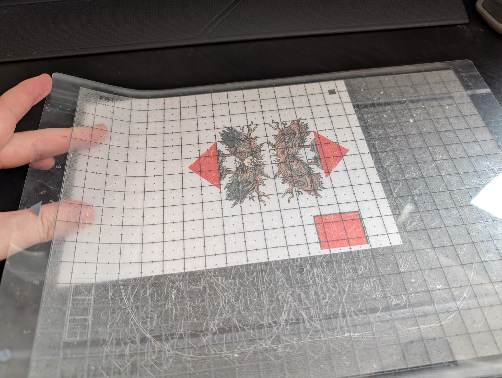
Please ignore that this photo has the design on the back of the card, I forgot a setting and didn’t want to waste the card so the corrected print is on the other side!
Sometimes when doing this the cut out design will remain on the sheet, sometimes it will come with it needing to be popped out. In either circumstance be careful not to tear any elements when it. I find using a flat knife black can help remove it from the sheet. Your cut design should look like this.
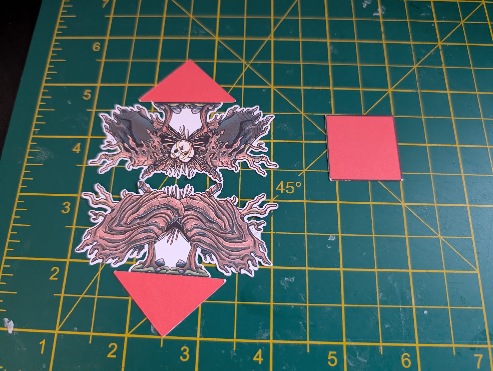
Assembling Your Mini
All that’s left to do here is to assemble them. Fold the mini along that centre line between the front and back artwork, and fold the base outsides along the perforating lines. I usually do a dry fit fold first before gluing anything, that should look like this.
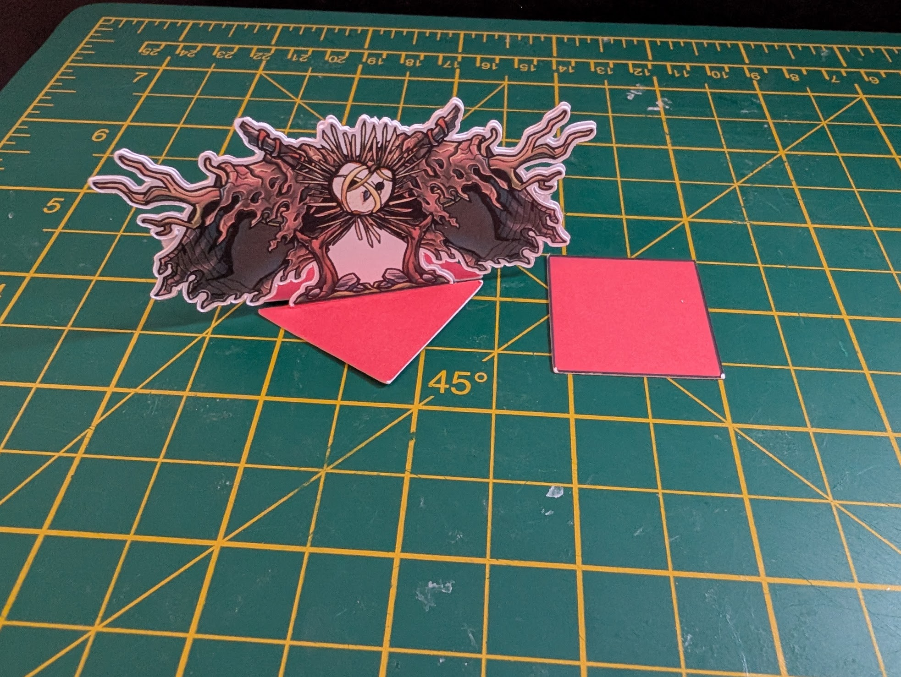
Finally using some form of stick glue, something like Pritt Stick in the UK, or I believe Elmer’s in the USA, glue the front and back together, being careful to get it aligned properly and then glue the base to the square of card we had cut out as well with our mini. The finished Mini should look something like this.
 Uses Paper minis designed by PrintableHeroes.com and combined by CapZylo
Uses Paper minis designed by PrintableHeroes.com and combined by CapZylo
And we’re done! Hope you all agree that the finished little guy looks very menacing and scary, just in time for my next Curse of Strahd Reloaded session! If you’d like to give this exact mini a go or use it as a template or guide for your own minis I’ve uploaded the studio cut file here.
Have any questions or feedback? Drop us a note in the comments below or email us at contact@tabletopbattles.com. Want articles like this linked in your inbox every Monday morning? Sign up for our newsletter. And don't forget that you can support us on Patreon for backer rewards like early video content, Administratum access, an ad-free experience on our website, and subscriber-only content covering competitive Warhammer 40K!Originally published on Goonhammer.


{kind=link}
{kind=link}
{kind=link}
{kind=link}
{kind=link}
{kind=link}
{kind=link}
{kind=link}
{kind=link}
{kind=link}
{kind=link}
{kind=link}
{kind=link}
{kind=link}
{kind=link}
{kind=link}
{kind=link}
{kind=link}
{kind=link}
{kind=link}
{kind=link}
{kind=link}
{kind=link}
{kind=link}
{kind=link}
{kind=link}
{kind=link}
{kind=link}
{kind=link}
{kind=link}
{kind=link}
{kind=link}
{kind=link}
{kind=link}
{kind=link}
{kind=link}
{kind=link}
{kind=link}
{kind=link}
{kind=link}
{kind=link}
{kind=link}
{kind=link}
{kind=link}
Leave a Comment